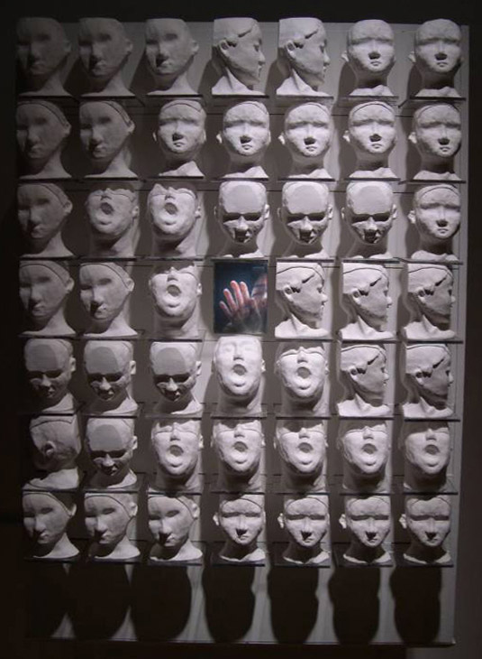
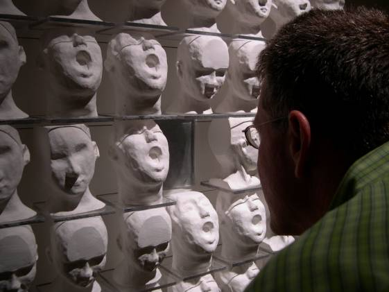

Picture



Museum Documentation
Video Only
In my piece Suffocation , I attempt to convey and explore the two cultural spaces that I inhabit: having grown up as a girl in Confucian Korean society and now living as a foreigner in America. The piece exists as a grid composed of forty-eight plaster heads with a video projected onto glass in the center. The video depicts an Asian female figure attempting to break out of the glass; she is pounding and knocking on it only to be ignored by the heads that surround her. Instead, they are facing in directions away from her.
Initially, the figure in the video appears to be the one who is being suffocated, as she is abandoned by the plaster heads that surround her and as she is metaphorically trapped within the confines of the glass. However, in reality, everyone in the piece is being suffocated: the female figure as well as the plaster heads and the viewer. Although there are forty-eight heads, they actually only exist in five different forms; some are forward-facing, some have their mouths open, some are looking down, some are looking to the right, and some are looking slightly down to the left. My decision to use multiples of the same mold in the same size was to demonstrate how culturally standardized the world has become as we enter a late-capitalist, globalized period. Often I cannot conclude what is the 'correct' way to proceed and I realize that cultural acceptance is usually ambiguous or not obvious. When the viewer encounters Suffocation , he too becomes one of the suffocated. He cannot literally release the figure from the confines of the glass and by viewing her, he is allowing her to remain trapped. But he is also alienating himself; he is neither with her nor with the plaster heads but rather by himself. In a sense, he becomes both part of the problem and simultaneously a victim of the problem. What is he to do? The work positions the viewer in an ambivalent position parallel to my own struggle.
Exhibition
2008 Feb, Mix it up , Rhonda Schaller Chelsea, NY (curator. Rhonda Schaller)
2006 Aug, Community Folk Art Center, NY (curator. Gina Stankivitz)
2005 Aug, Feminism Festival, The Arts @Marks, Hawaii (curator. Kathryn Xian)
2005 May, Becoming Uncomfortable , List Museum, RI
2005 Mar, Technetronic Teleologies , The Sol Koffler Gallery, RI